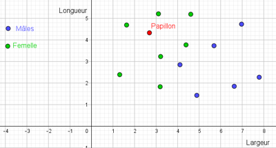
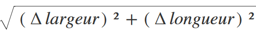
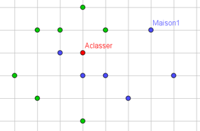

Algorithme des k plus proches voisins⚓︎
Qu'est-ce que le machine learning (algorithme d'apprentissage) ?⚓︎
Visionner cette conférence jusque au moins 17min30s
Dans l'exemple de la vidéo, l'objectif est de reconnaître une clémentine d'une orange en mesurant simplement son diamètre.
Si tous les voisins sont des clémentines ou des oranges, la prédiction est assez simple. Cependant en cas de "cas limite" il faut faire un choix sr la détermination. Est-on au-dessus ou en-dessous de la moyenne ? Quel est le fruit le plus proche ?
Autre solution, que sont les 3 ou 5 plus proches voisins ?

Causalité ou corrélation?
La causalité entre deux données établit une relation de à . Alors que la corrélation se contente de faire le entre deux données.
Apprentissage
Dans quel ordre se fait l'apprentissage?
Algorithme des kppv (ou Knn K nearest neighbors)⚓︎
Dans le cas précédent, il n'y a qu'un seul paramètre d'entrée (le diamètre). Dans le cas de l'étude de papillon, par exemple, on classe les mâles et es femelles en les caractérisant par leur largeur et leur longueur.
Voici la répartitions des données :
 On utilise ensuite des données de papillons, dont on souhaite identifier le sexe.
On utilise ensuite des données de papillons, dont on souhaite identifier le sexe.
1er cas : pas de doute les données le font se trouver au milieu des femelles. On peut prévoir que celui-ci est une femelle.

2e cas : L'hésitation est permise. On n'est pas sur de le classer correctement.

On utilise alors l'algorithme des k plus proches voisins. On observe sur K voisins combien sont des mâles et combien sont des femelles.
Sur le document ci-dessous, en cliquant sur cercle (cercle centre-point) chercher à déterminer que sont les plus proches voisins et répondez à la question :

Choix du nombre de voisins
Nombre de voisins
On attend ici une réponse en un mot uniquement.
Pourquoi choisit on entre 1, 3, 5, ... pour le nombre de plus proches voisins ? Qu'est ce que ces valeurs ont de particulier ?
Elles sont ...
grand jeu de données
L'avantage d'utiliser un grand jeu de données est que la prédiction est plus mais que l'apprentissage est plus .
La métrique⚓︎
La métrique est la "distance" que l'on se fixe. Dans le cas précédent, la métrique est

Dans l'exemple ci-dessous, on a classer des maisons, selon si les enfants sont scolarisés dans l'école bleue ou dans l'école verte. Une nouvelle maison a été construite.

Choisir l'école
Conclusion⚓︎
L'algorithme des k plus proches voisins est un des plus simples algorithmes d'apprentissage.
Malgré sa simplicité, pour qu'il puisse contribuer à des prévisions correctes, il faut avoir un jeu de données important (d'où l'enjeu des données personnelles dont les GAFAM sont si gourmandes).
Le principe étant de disposer d'un jeu d'apprentissage et d'un jeu de test (un ensemble de données sur lesquelles ont connaît la réponse et on évalue la fiabilité de la prédiction). Le travail de mise au point (choix de k ici est fondamental).
L'algorithme⚓︎
Apprentissage :⚓︎
A partir d'un jeu de données importants, extraire la métrique.
associer la valeur de la métrique à une catégorie.
Utilisation :⚓︎
Entrer une valeur de métrique et un nombre de voisins k
Chercher dans le tableau d'apprentissage les k valeurs les plus proches de la métrique d'entrée
extraire les catégories correspondantes
chercher le nombre d’occurrences de chaque catégories
Renvoyer la catégorie ayant le plus grand nombre d’occurrences
TP : détection de la langue d'un texte⚓︎
Dans un texte, on constate que la fréquence d'apparition des lettres de l'alphabet est différente selon la langue. En effet, en anglais par exemple, les H sont beaucoup plus fréquents que en français et à l'inverse, le français utilise plus de U.
Nous allons utiliser un texte anglais et un texte français pour tracer la fréquence d’apparition des U en fonction de celle des H pour étudier la répartition.
Marche suivre :
- Chaque phrase des textes d'apprentissage possède une fréquence de U et de H que l'on associera dans une liste [freqU,freqH]
- On crée une liste combinant les fréquences dans les textes d'apprentissage et la langue associée.
- On compare les distances des fréquences entre le texte inconnu et les textes d'apprentissage.
- On en extrait les plus courtes pour déterminer la langue.
- On utilisera le fichier knn.py pour écrire les fonctions et le fichier main.py pour appeler les fonction et traiter les textes.
Détail des fonctions à écrire :projet KPPV
Codes à compléter :
knn.py
1 2 3 4 5 6 7 8 9 10 11 12 13 14 15 16 17 18 19 20 21 22 23 24 25 26 27 28 29 30 31 32 33 34 35 36 37 38 39 40 41 42 43 44 45 46 47 48 49 50 51 52 53 54 55 56 57 | |
main.py
1 2 3 4 5 6 7 8 9 10 11 12 13 14 15 16 17 18 19 20 21 22 23 24 25 26 27 28 29 30 31 32 33 34 35 36 37 38 39 40 41 42 43 44 45 46 47 48 49 50 | |
Textes d'apprentissage :
texte en anglais : texte en anglais
texte en français : texte en français
Textes inconnus dont il faut déterminer la langue :
texte inconnu
texte inconnu 2
texte inconnu 3
texte inconnu 4
Rendu :⚓︎
il est IMPÉRATIF de rendre le fichier knn.py contenant les fonctions et le fichier main.py qui appelle les fonctions. RESPECTER LE NOM DES FICHIERS !! (pour passer les tests automatiques).
Le tout pourra être mis dans un dossier contenant les fichiers txt et les fichiers .py.